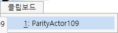
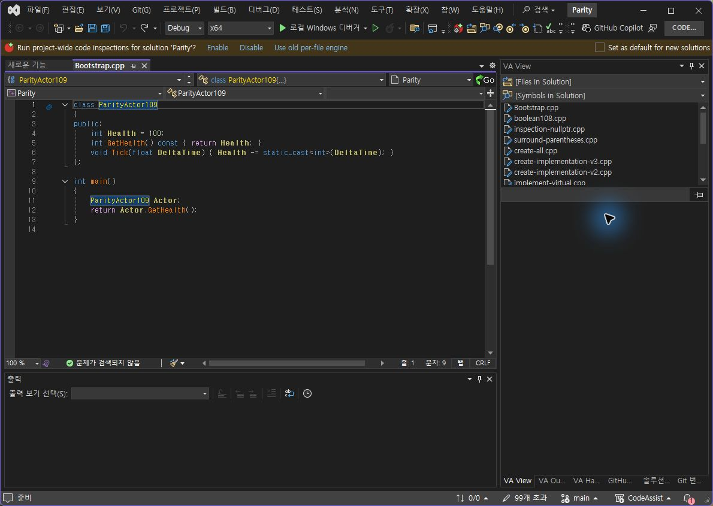

Tracefolio REPORTS & ISSUES
Tracefolio REPORTS & ISSUES0.0.108 실제 IDE 라이트 재검증
기존 기록 이전원문에 기록된 작업 내용과 당시 검증 범위를 정리한 보관 기록입니다.
보관 기록 · 결과와 검증 범위는 원문 작성 시점을 기준으로 읽어주세요.
0.0.108 실제 라이트 재검증
0.0.108 실제 IDE 라이트 재검증
Computer Use 팝업 좌표 전달 방식을 바로잡아 양쪽 프로필의 실제 라이트 전환을 확인했습니다. 설치 바이너리 재확인 6/6 일치.
VA / CA 클립보드 선택 행


선택 배경이 양쪽 모두 연한 파랑 계열로 표시됩니다. 높이·헤더 언어·테두리 세부 차이는 남아 있습니다.
VA / CA 메서드 선택 행


VA는 흰 배경과 파란 테두리, CA는 파란 채움입니다. 두 팝업을 같은 팔레트로 처리해서는 완전히 맞지 않습니다. 실제 라이트 촬영 범위 2/2(100%), 선택 배경 기준 일치 1/2(50%)이며 전체 UI 유사도가 아닙니다.
라이트 코드 대비 차이


CA의 노란 심볼은 흰 배경에서 대비가 낮습니다. VA의 어두운 타입 색상과 차이가 있으며 미수정으로 기록합니다.
원래 다크 테마 복구


남은 작업: 메서드 선택 스타일 분리, 라이트 심볼 대비, 메뉴 세부 치수·누락 옵션, 전체 기능의 현재 실행 대조. 문서 부분 명세 108/108(100%)는 전체 역분석 완료율과 다릅니다.
판정 범위·촬영 해시 · 설치 재확인 · 재현 가능한 팝업 좌표 방식
XERJ: 미사용 — 이번 단계는 GUI 재검증으로 코드 검색 불필요.
원문과 편집 이력
- 원문 SHA-256:
fd63cfddea426df08f6bdda24e190ec2953d093ad323cd97d3eadc33d636afe8 - 표시 날짜는 원본 파일의 수정 시각입니다. 작업 완료 시각은 원문에 있는 값을 기준으로 확인합니다.